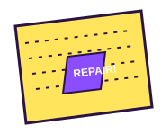
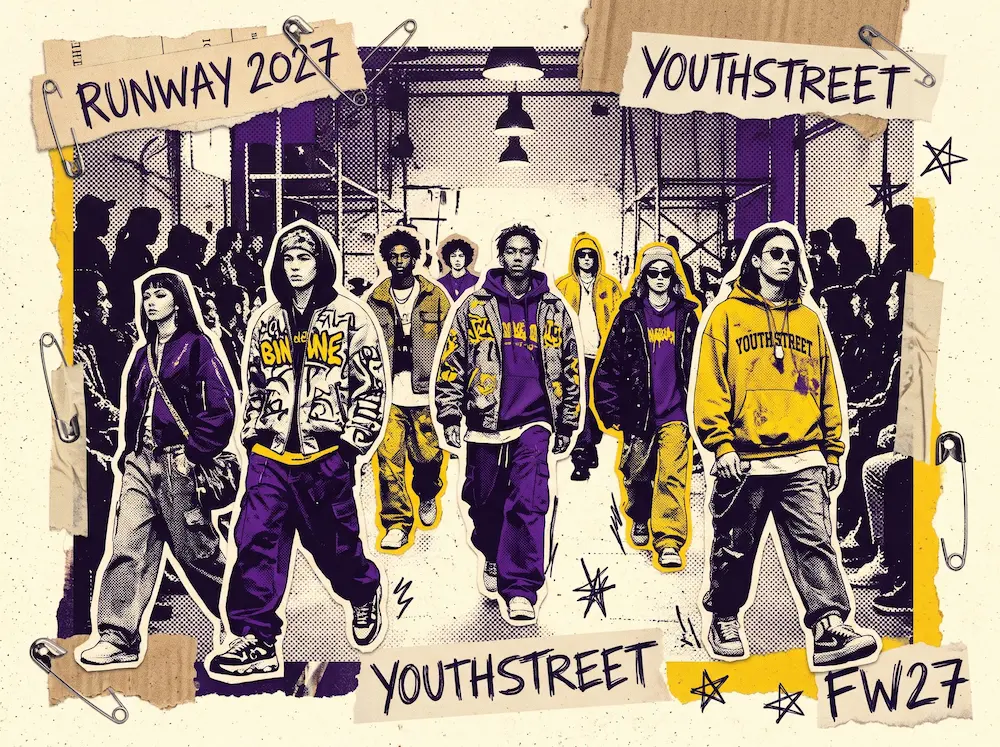
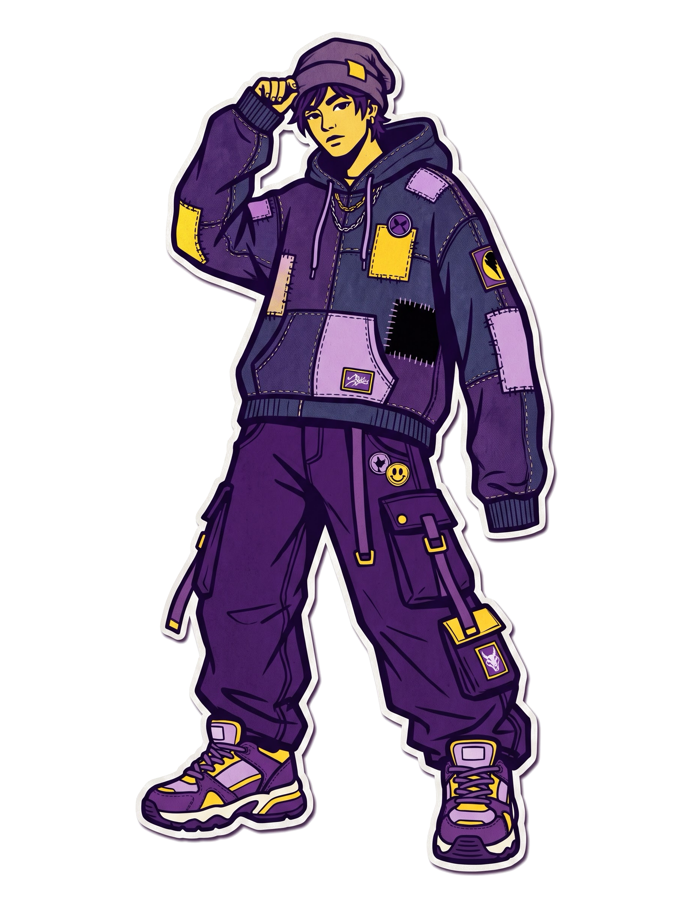
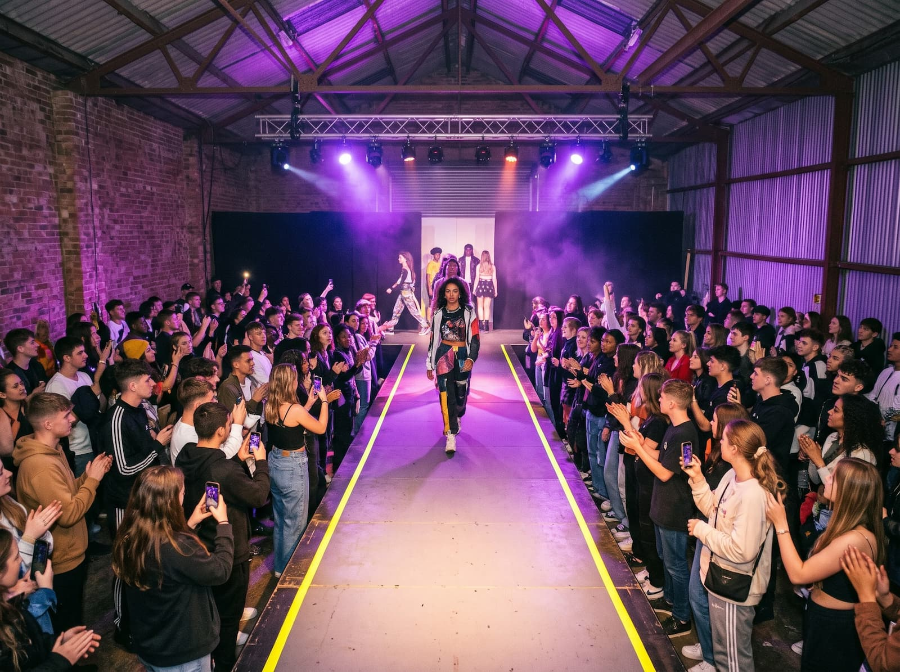
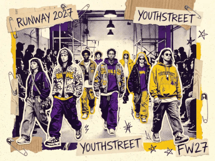

100 % Teen-Power
Die Bühne gehört jungen Designer:innen, Schüler:innen und Skater-Crews. Hier stehen ihre Ideen, Styles und Geschichten im Mittelpunkt.
Schluss mit langweiliger Kaufhaus-Stange! Bei CUT & CATWALK übernehmen junge Designer:innen zwischen 13 und 19 Jahren den Laufsteg. Hier prallen zerschnittene Vintage-Denims, handgedruckte Patches, Sicherheitsnadeln und knallige Collage-Looks auf fette Beats.



Die Bühne gehört jungen Designer:innen, Schüler:innen und Skater-Crews. Hier stehen ihre Ideen, Styles und Geschichten im Mittelpunkt.
Aus Vintage-Denim, Zine-Schnipseln und Siebdruck-Resten entstehen Einzelstücke mit Haltung. In der DIY-Zone kannst du eigene Klamotten individuell gestalten.
Der Teen-Pass kostet 8 Euro. Dabei sind der Zugang zur Aftershow-Party, die Fotobox-Collage-Wand und ein Stickerset.

Unser Laufsteg sieht aus wie ein riesiges, begehbares Skizzenbuch. Überall kleben Poster-Fetzen, Polaroids und Neon-Markierungen. Zwischen den fünf geplanten Runway-Blöcken legen junge DJs Hip-Hop, Hyperpop und Indie-Rock auf.
Am Ende des Abends stimmen alle Besucher:innen per Sticker-Voting über den „Best Cut Award 2027“ für das kreativste DIY-Outfit ab.

„Endlich eine Modenschau, bei der man in zerrissenen Cargos und selbstbemalten Sneakern auftauchen kann. Die Energie im Raum ist einfach wild!“
„Bei der Customizing-Station wird aus einem alten Sweatshirt ein ganz neues Lieblingsstück. Und beim Open-Runway kann man den eigenen Look zeigen.“